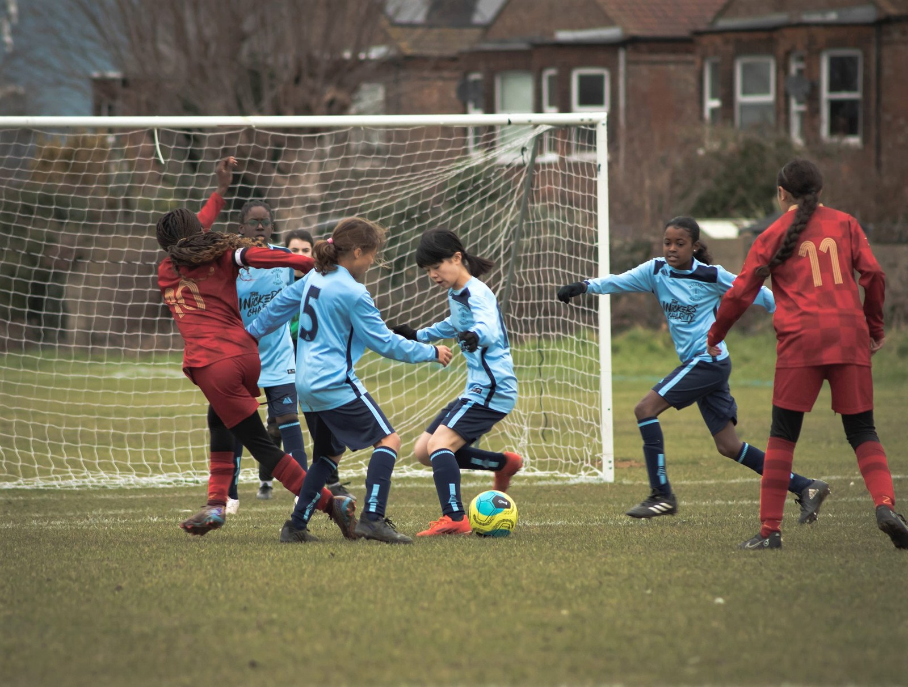

LATEST NEWS
- 2026: Hackney girls win the Southern Counties Cup
- 2026–27: Kwik cricket, tag rugby, cross country and orienteering planned
- School sport enquiries: info@hsaa.org.uk
Every child.
Every chance.
Through sport.
Welcome to the Hackney Schools Athletic Association (HSAA) website — where every Hackney primary school child’s potential takes centre stage. We believe sport is more than just a game; it’s a powerful tool for teamwork, discipline, and confidence. Through the exciting competitions, skill-building programmes, and community events we deliver, we endeavour to nurture a love for physical activity while fostering values that last a lifetime. Together, we’re shaping healthy, happy, and resilient children & young people.
This is an information point for Hackney Primary Schools Sport and we also hope this is a resource which can assist in promoting opportunities for Hackney Primary Schools to access. Enjoy!

Every Hackney primary school child’s potential takes centre stage.
We believe sport is more than just a game: it is a powerful tool for teamwork, discipline and confidence. Through competitions, skill-building programmes and community events, we endeavour to nurture a love of physical activity and values that last a lifetime. Together, we are shaping healthy, happy and resilient children and young people.
This website is an information point for Hackney primary school sport and a resource to help schools access sporting opportunities.
HSAA was established by teachers who recognised the importance of after-school sport. The association celebrated its centenary in 1991 with a special match against Tower Hamlets at Leyton Orient FC. Today it oversees boys’ and girls’ district football and school competitions across the borough.

A borough full of possibility.
From the football pitch to the cross-country course, discover sport for Hackney’s primary schools.
Borough representative teams
Boys’ and girls’ district football, bringing together young players from primary schools across the borough.
02 / SCHOOL SPORTCross Country League
The Primary Cross Country League is part of HSAA’s planned 2026–27 sporting programme.
03 / FOOTBALLFive a sides
School football competitions for boys and girls across Hackney.
04 / FOOTBALLNine a side League
Boys’ and girls’ school leagues, bringing friendly rivalry back to the pitch.
05 / SCHOOL SPORTKwik cricket
Kwik cricket is part of HSAA’s planned 2026–27 programme for Hackney primary schools.
06 / SCHOOL SPORTTag Rugby
Tag rugby is part of HSAA’s planned 2026–27 sporting programme.
07 / SCHOOL SPORTYoung & Active Hackney 2030
Affiliation and participation in the wider school sport programme.

Local talent.
Lasting memories.
Our boys’ and girls’ district teams give young footballers the opportunity to represent Hackney, meet players from other schools and compete beyond the borough.
The girls won the Southern Counties Cup in 2026, following the boys’ success in 2024.
Discover our representative teams →More than the final score.
We believe sport is a powerful way to build teamwork, discipline and confidence. HSAA provides extra-curricular sporting opportunities and encourages healthy rivalry between schools and districts, underpinned by equal opportunities, child protection and safeguarding.
Be part of HSAA →